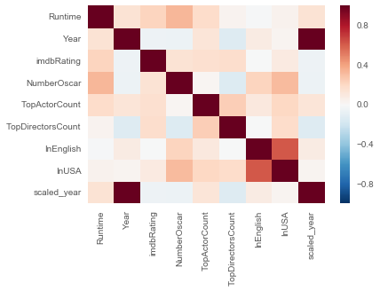
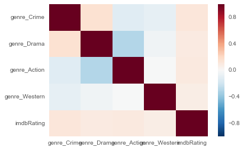
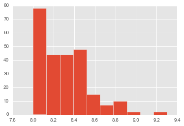
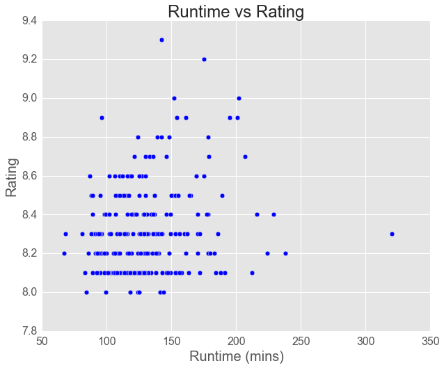
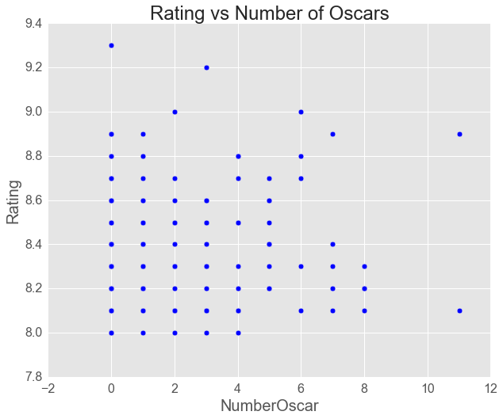
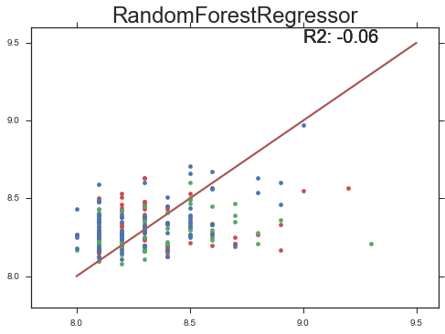
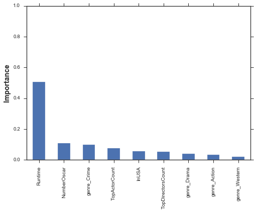
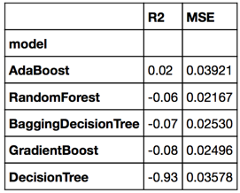
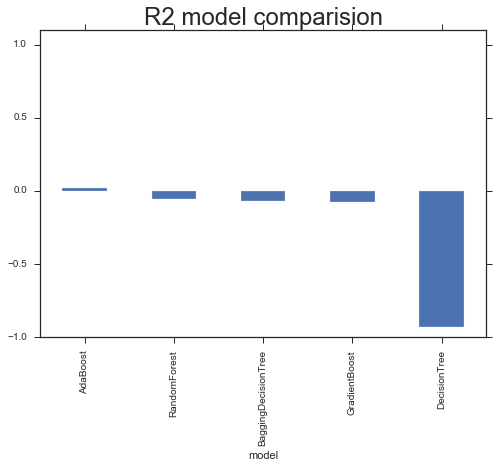

Overview
This week we've learned about ensemble methods and APIs. We will acquire data from IMDb, and use the collected metrics to predict whether a movie is highly rated or no. We will produce a report detailing our findings including next steps recommendations.
Problem Statement
I have been hired by Netflix to examine what factors lead to certain ratings for movies, and also to add some of the top movies to their offerings based on popularity and other factors since they have not been focused on collecting data on them.
NetFlix has some standards already established on their data science department: They use random forests and decision trees to predict what types of movies an individual user may like.
I will use IMDb API to create a model for the predictions.
Project Goals
The main goals for this project are:
- Data from IMDB
- Cleaned and refined data
- Visualization. Plots that describe your data and evaluate your model.
- Tree-based models (use any combination of ensemble techniques: random forests, bagging, boosting).
- summary statistics of the various factors (e.g. year, number of ratings, etc.)
- The model
- graphics
- Recommendations for next steps
Dataset Background
The Internet Movie Database (abbreviated IMDb) is an online database of information related to films, television programs and video games, including cast, production crew, fictional characters, biographies, plot summaries, trivia and reviews. Actors and crew can post their own résumé and upload photos of themselves for a yearly fee. U.S. users can view over 6,000 movies and television shows from CBS, Sony, and various independent filmmakers.You can find more information here
IMBDpie API Information.
Dataset Description
The Imdb data set has a total of 250 rows and 51 columns. Imdb dataset after data mining
VARIABLE DESCRIPTIONS We will describe here the most important features columns only. The dataset link above has all the columns and details.
- NumberOscar How many Oscars the movie won.
- TopActorCount Top actors - are actors that have movies in the top 250. This indicate how many of them are participating in this movie.
- TopDirectorsCount Top directors - are directors that have movies in the top 250. This indicate how many of them are participating in this movie.
- InUSA indicate if the movie was totally or partially done in USA.
- Runtime how long is the movie in minutes.
- genre_Crime binary value that indicate if 'crime' is one of the GENRE of the movie (1 = Yes, 0 = No).
- genre_Drama binary value that indicate if 'Drama' is one of the GENRE of the movie (1 = Yes, 0 = No).
- genre_Action binary value that indicate if 'Action' is one of the GENRE of the movie (1 = Yes, 0 = No).
- genre_Western binary value that indicate if 'Western' is one of the GENRE of the movie (1 = Yes, 0 = No).
- imdbRating Movie Rating - This is our Target.
Data Mining
Created the following columns:
- Number of oscars won based on the Awards Column.
- Top 10 actors count per movie based on # of movies the actor has in the top 250.
- Top 10 directors count per movie based on # of movies the director hasin the top 250.
- "In English" binary column to indicate that the movie is in English or partially in English.
- "In USA" binary column to indicate that the movie done in USA or partially in USA.
- Converted "runtime" into type INT.
- Converted "Released" into type date.
- Converted "Year" into type INT and Standarize it.
Heat Map with the relationship of the numeric features and the imdbRating

Heat Map focused in most influential GENRE(s) found and the imdbRating
Findings
I created multiple models for comparison.
- The Ramdom Forest Model is the one with the lower MSE.
- The most influenctial feature is the 'Runtime', followed by the Number of Oscars and the "Crime' Genre among others that you can see in the graphic and dataframe above
- Number of reviews seems to be a goos feature too, but it did not make sense to include that snce the reason was because the most popular movies got more reviews and this is only causing noise in there
Histogram of the imdbRating


Model
features = ['NumberOscar','TopActorCount', 'TopDirectorsCount', 'InUSA', 'Runtime', 'genre_Crime', 'genre_Drama', 'genre_Action','genre_Western']<\p>
Target = ['imdbRating']<\p> 
Features of imporance in the Random Forest Regressor used
Results and Conclusion
I used the Ramdom forest for the predictions. This model has the lowest MSE (mean squared error) of all the models.
After creating multiple models and compare them, there is not that much differece in terms of R2(s) and MSE(s) with the exception of the Decision Tree that has a R2 -0.93 and MSE of 0.03578
There are so much data available in this API and in the web, we can work much more on evaluating if there are more features that can do a better prediction. I also simplified or summarized some variables like actors, directors country, we can be more specific on this and get more "refined" features.
I concentrated only in the Top 250, if we want the model to me smarter and optimal we MUST add the medium and low rated movies to the datset.
Model comparison results below
 